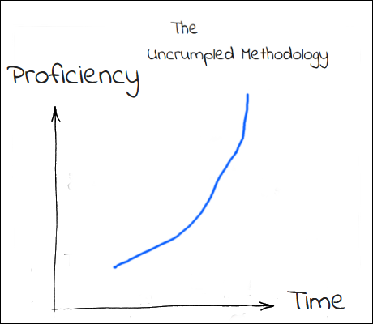

Why¶
1. Because be the Peach !

Uncrumpled is designed to be very simple and very rewarding to use. That being said, there are many plans for advanced features. As you become more comfortable with the basic features, it’s very natural to want more control and flexibility, so..
2. Uncrumpled strives to promote and reward cognitive thinking!
The use of uncrumpled is meant to be somewhat like this.
Some Text on Why Uncrumpled
Uncrumpled is all about automation. It’s a fasicantion of the founder Tim. Conventional note taking programs give you a place to store and retrieve your data. But as your data set grows, you have to remember your orginizational structure and often struggle to find your information. Thought flows are disturbed and you are required to invest time into learning your noteaking landacape. If you fall into a lapse of laziness then everything seems to fall into a mess.
Uncrumped requires learning at the beginning, to understand, tags, hotkeys, workbooks and the configuration options that come with them. You as a user however are then rewarded with a note taking process that scales up, becomming easy to maintain and manage the more data you have. Be wary fellow internet traveller, you may have heard these jargon terms used on your quest to find a note taking program, but uncrumpled handles notetaking differently than any other software on the market.
Out of the way, yet always there, like a best friend
Uncrumpled also makes it clear that we don’t want to be in your face. Your notetaking interface is seperate from your origniazational interface, this is possible because uncrumpled is about defining relationships between what you are doing, and what you are using on your computer.